统筹研究范围
43.6 km²
官方文本面积，精确边界待正式资料补齐。
 查看指标
查看指标
核心指标
以下数值用于 `visual/index.html` 首屏之后的阅读层，后续正式投稿时必须与 `metrics.json`、GeoJSON 和矩阵文件保持一致；涉及临时范围的内容均需在 official polygon 到位后复算。
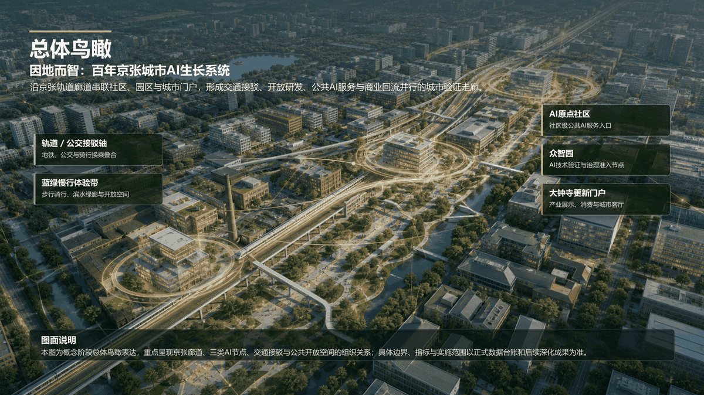
范围研究说明
本方案先把 43.6 平方公里的创新生态关系看清，再在 11.4 平方公里总体设计范围内组织公共骨架、慢行蓝绿、更新项目和 AI 场景，最后把三处重点区域落实为可被专业团队继续深化的空间与运营任务。
研究高校、科研院所、企业、社区、轨道站点、蓝绿空间和中关村科技服务资源之间的区域关系，判断哪些创新能力能够进入百年京张沿线的真实城市问题。
边界：不在这一层直接下控规指标、建筑高度、道路红线或工程实施结论。
组织低扰动城市更新结构：连续公共骨架、河园公共验证带、社区/高校/产业短环、三处 AI 重点区和中关村科技服务网络，共同支撑日常使用与场景验证。
边界：当前为概念级总体设计，面积、绿地率、公共空间比例须由提交包内 GeoJSON 复算。
众智园承担技术验证与治理准入，AI 原点社区承担真实问题入口与青年共创，大钟寺承担产品化、分类运营和国际交流。三者构成同一条城市 AI 生长链。
边界：重点区仍使用临时几何和概念载体，不代表取得空间、审批、招商、权属或企业承诺。
范围研究的关键不是把线画满，而是把“能证明什么”和“还不能证明什么”分开：官方文本面积可用于解释尺度，临时几何可用于概念推演；正式红线、控规条件、权属、建筑、市政和现场客流数据到位后，相关指标必须重新复算并更新 `metrics.json`、图件和网页。
概念框架说明
图 2 把总体设计范围、三处重点区、河园验证空间和运行链条放在同一张图里：真实需求从社区和城市日常进入，技术在众智园接受治理准入，小月河与京张遗址公园提供公共空间验证，大钟寺完成产品化与分类运营，公共价值再回到下一轮城市服务更新。

以居民、青年、穿行者、文化参与者、企业和运营者的真实问题为起点，保留线下人工入口、拒绝权和反馈回执。
每个 AI 场景先通过场景护照、数据边界、安全评测、人工接管和退出恢复审查，再进入公共空间验证。
公共价值项目进入公共持续评估，商业项目进入产品化通道；商业回流作为建议机制支持公共 AI 更新。
三处重点区域
众智园回答“技术如何可靠”，AI 原点社区回答“问题如何真实进入”，大钟寺回答“验证后的成果如何持续运营和产品化”。三者共享同一套场景护照、治理准入、人工接管和证据回执。

承担共享治理沙盒、受控测试庭院、公开测试廊和维护后台。公众可以理解测试过程，但高风险测试必须有隔离、记录和人工接管条件。
设置人工服务台、城市问题墙、共创桌、原型工坊和社区评议厅，让需求不是被采集后消失，而是形成可查询、可反馈的场景护照。
承接产品验证厅、企业共享服务、国际交流和公共/商业分类评估。蓝景丽家类型载体仍是条件性候选，不写成已取得空间。
节点效果图
三张节点图统一采用“真实城市更新、克制科技感、公共空间可使用”的表达：让评审先看到空间如何被人使用，再回到前面的图件、指标和证据文件复核。
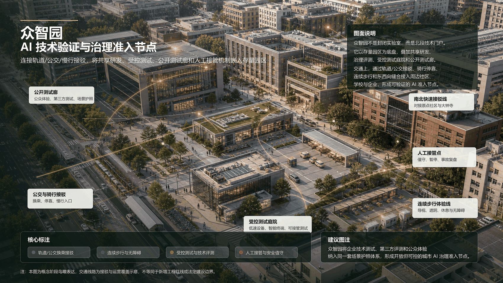
把研发、中试、治理评审和公开观察组织在同一套可控空间里，重点表达“技术可靠后再进入城市”。
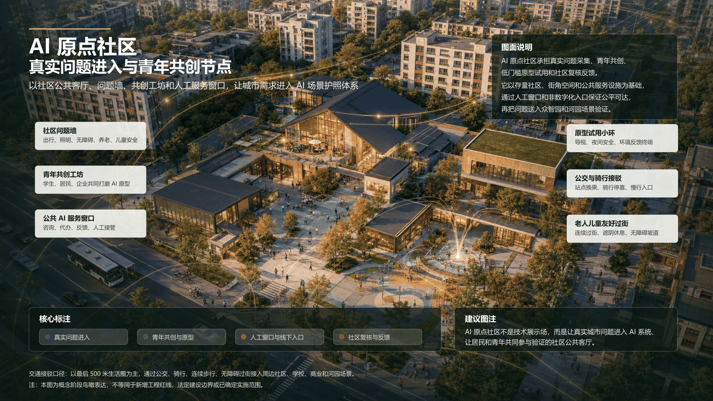
把城市问题入口、青年原型工坊和社区评议放在可到达的日常界面，保留人工服务和非数字入口。

把产品验证、企业服务、公共反馈和国际交流叠合到更新门户中，形成商业放大与公共反哺的条件性接口。
人群分析
本方案把人群从“被动客流”改写为“提出问题、共同验证、参与运营、获得回执”的城市参与者。每类人群都必须对应真实任务、空间入口、AI 能力、人工兜底和拒绝边界，避免把公共空间 AI 做成单向采集。
关注步行安全、休息补给、老人儿童友好、社区问题反馈和公共服务可达；需要线下人工窗口、非智能手机入口和清晰反馈回执。
关注从站点、社区、高校到河园和产业节点的连续通行；需要可解释绕行、夜间求助、骑行步行补给和低打扰信息提示。
关注真实问题、快速原型、测试场地和评议反馈；需要开放工位、原型工坊、场景护照和受控测试机会。
关注百年京张记忆、小月河体验、遗址公园活动和可追溯导览；需要低干扰展示、内容授权说明和可选择的参与方式。
关注合规评测、用户测试、设备试运行、产品发布和采购转化；需要众智园准入、大钟寺分类运营和清楚的知识产权边界。
关注设备维护、人工接管、投诉闭环、风险复盘和年度运营；需要看得懂的日志、工单、停止条件和资产台账。
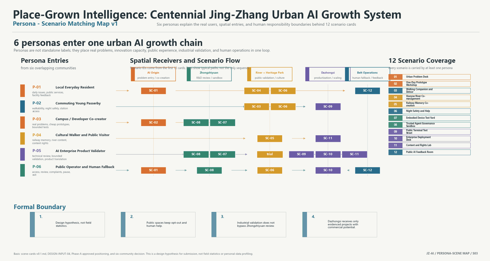
12 个首批 AI 场景
12 个场景统一进入场景护照，记录数据边界、责任主体、人工接管、停止条件和退出恢复。SC-07 至 SC-10 作为产业测试验证场景，只有通过公共价值、社群接受度、技术效果和运维可行性评估后，才进入产品化或规模化讨论。
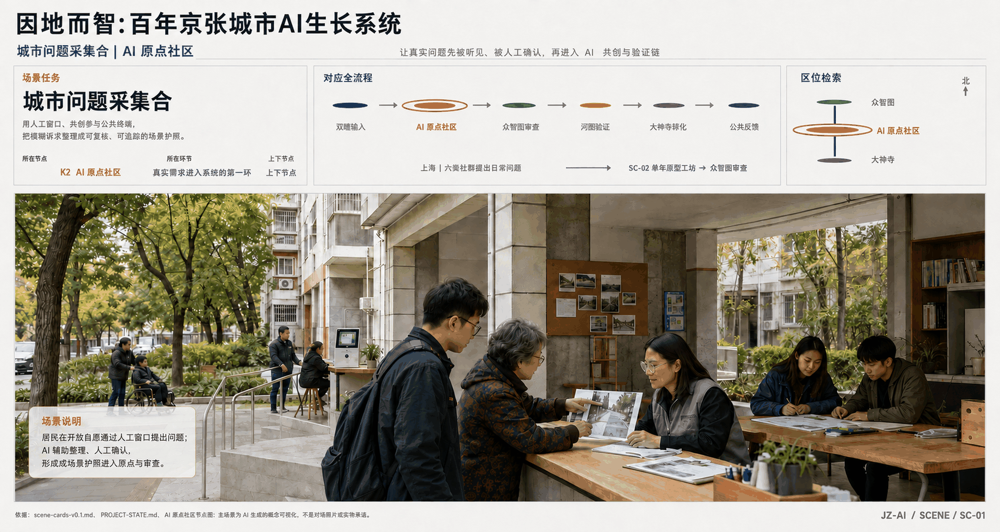
原点社区和移动服务点把居民、穿行者、运营者提出的问题整理成可复核的场景护照。
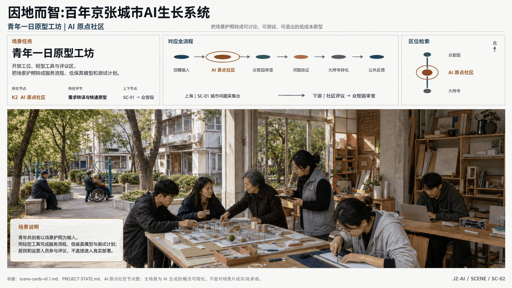
把真实城市问题转化为低保真模型、服务流程和测试计划，形成可讨论的首轮原型。
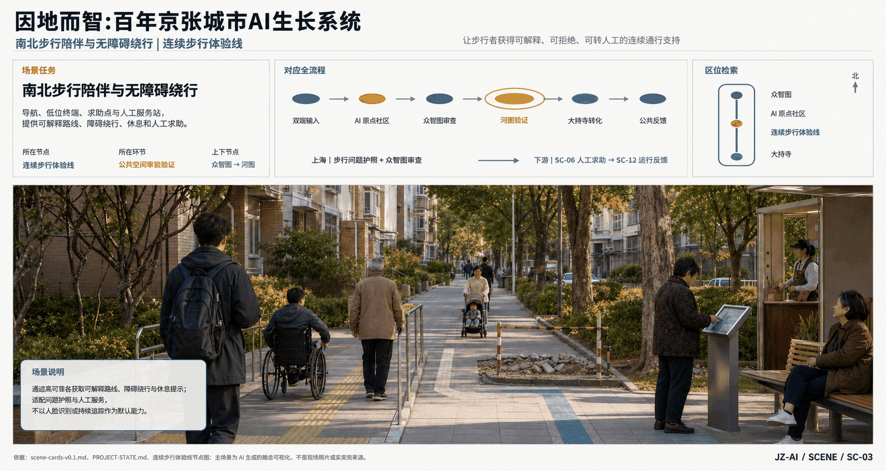
在连续步行体验线中提供绕行、休息、求助和人工服务，不把路线服务变成强制追踪。
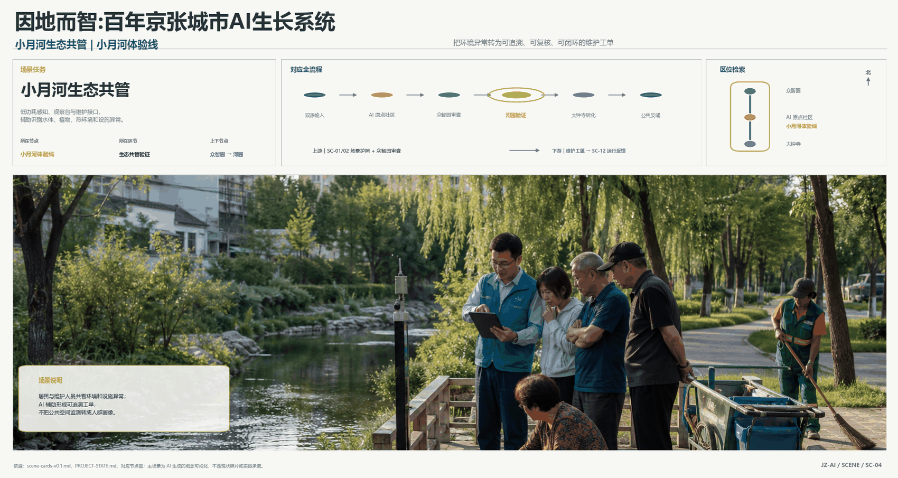
以环境和设施数据为主，辅助识别水体、植物、热环境和设施异常，并生成维护工单。

把口述史、铁路档案和社区内容组织为可追溯导览，内容来源和授权方式同步记录。
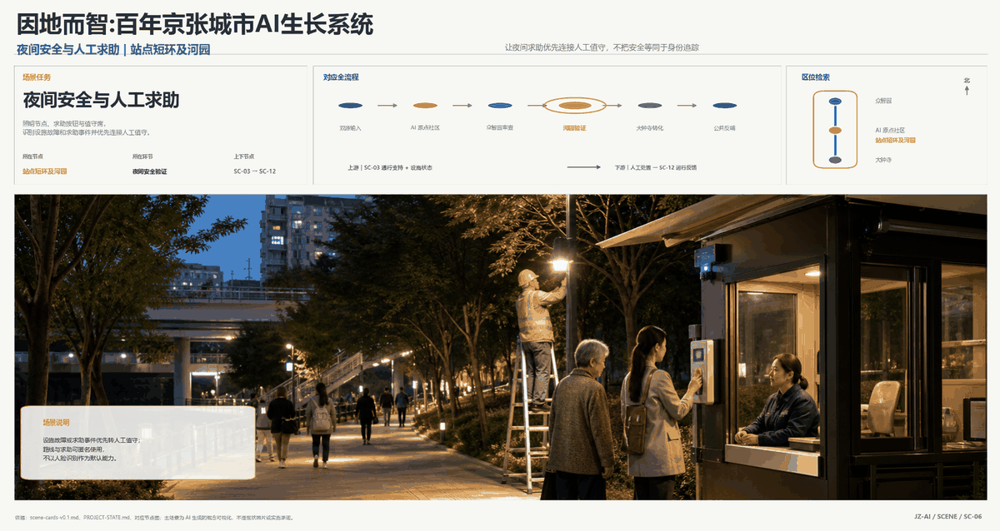
站点短环与河园空间优先连接人工值守，处理设施故障、求助事件和夜间安全反馈。

在众智园限域测试配送、清洁、巡检等设备的避让、停止、接管和退出恢复。
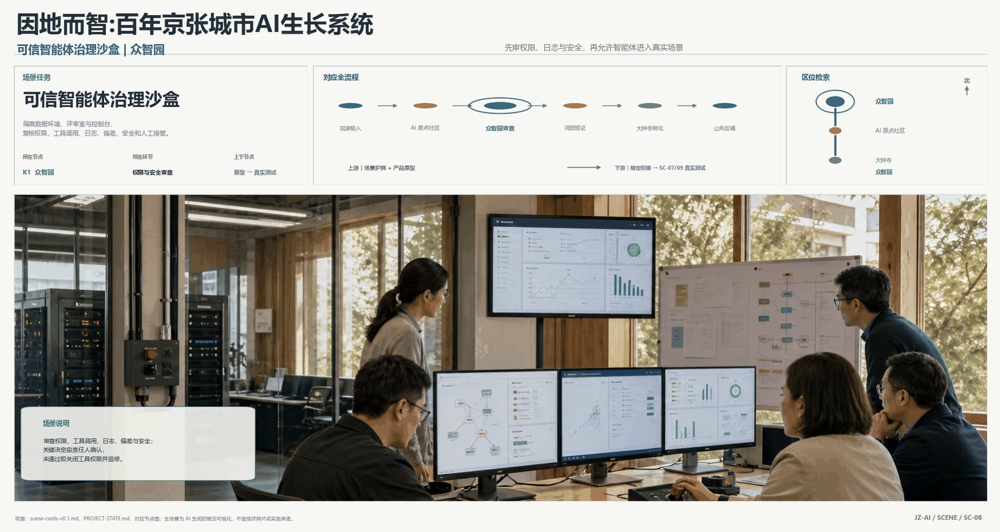
复核智能体权限、工具调用、日志、偏差、安全和人工接管，不允许绕过治理直接投放。
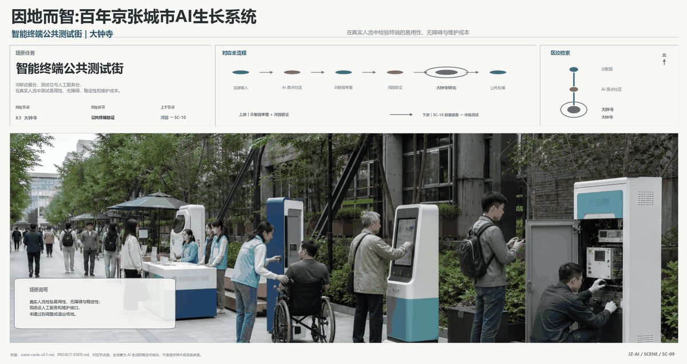
在真实人流中测试公共终端的易用性、无障碍、稳定性、维护成本和人工服务边界。

在大钟寺支持产品部署、接口接入、合规检查、用户测试和运维交接。
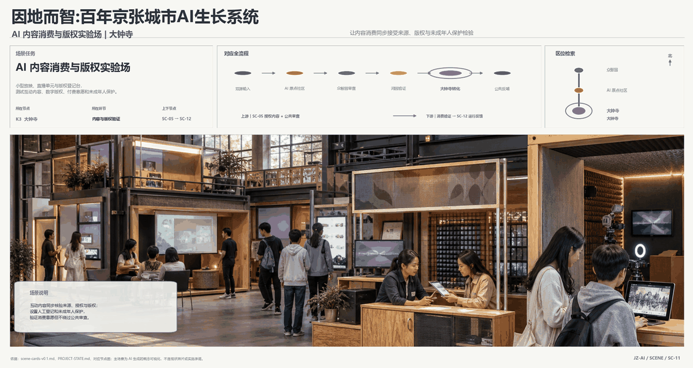
测试互动内容、数字版权、付费意愿和未成年人保护，所有内容记录来源与授权。
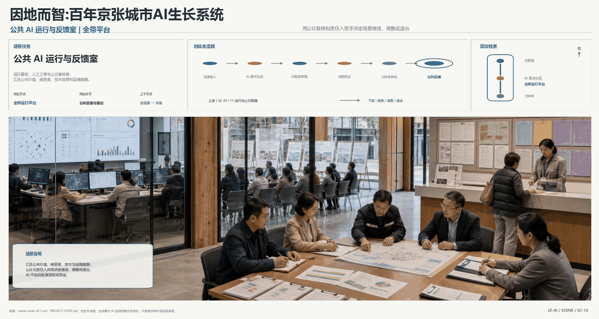
汇总公共价值、接受度、技术效果和运维数据，组织继续、调整或退出决策。
技术指标与经济指标
本页只放概念阶段可表达的主指标。所有金额、比例、路线长度、公共空间比例和绿地蓝绿比例，正式投稿前都需要与边界、图件、`metrics.json`、GeoJSON 和资金测算表重新核对。
| 指标类别 | 当前表达 | 边界说明 |
|---|---|---|
| 空间范围 | 统筹研究 43.6 km²；总体设计 11.4 km²；三重点区合计 368.4 ha。 | 官方文本面积 + 临时几何，正式边界到位后复算。 |
| 交通与公共骨架 | 南北快联系约 22.0 km；连续步行约 10.5 km；遗址公园体验约 10.3 km；五处东西缝合合计约 9.3 km。 | 路线存在共线和重叠，不能直接相加为建设长度。 |
| 场景与治理 | 12 个首批 AI 场景，其中 4 个产业测试验证场景；共用场景护照与四维验证。 | 不得写成已经投放、已经审批或已经形成运营数据。 |
| 投资与运营 | 财务结果已撤回为 unknown/value=null，仅保留可复算参数模型。 | 不构成预算、概算、融资、招商、采购、收入或公共回流承诺。 |
资料来源与证据链说明
本页不是宣传海报，而是可追溯的网页展示稿：官方资料定义任务与范围，公开数据提供背景判断，用户锁定输入形成概念框架，项目工作文件生成空间、场景、技术和经济表达；所有临时边界、估算、候选空间和效果图均保留条件性声明。

当前网页完成的是“可展示的中文工作稿”。它可以说明方案逻辑、空间气质、场景体系和指标口径，但正式投稿前仍需统一更新：官方规则版本、source ledger、GeoJSON、`metrics.json`、双语图件、网页文件、A0 展板、A3 文册和最终 preflight 记录。
正式提交核验索引
本页保留最终完整展示内容，并补充官方自检需要直接可见的栏目词和核心指标。
蓝绿公共空间
公共空间比例
重点区域